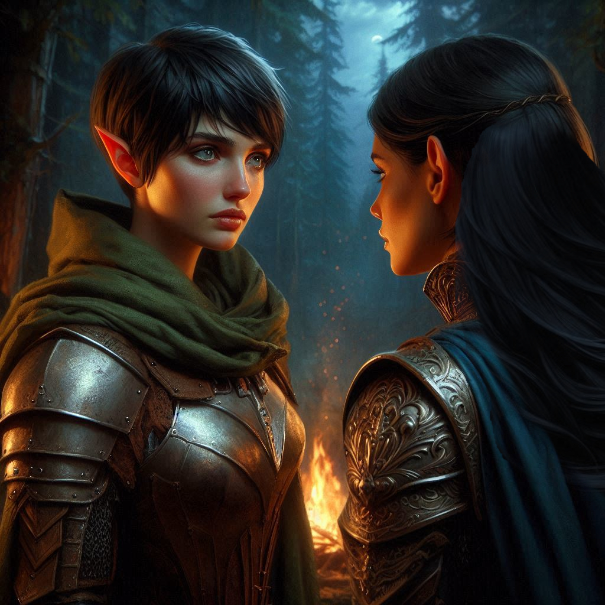
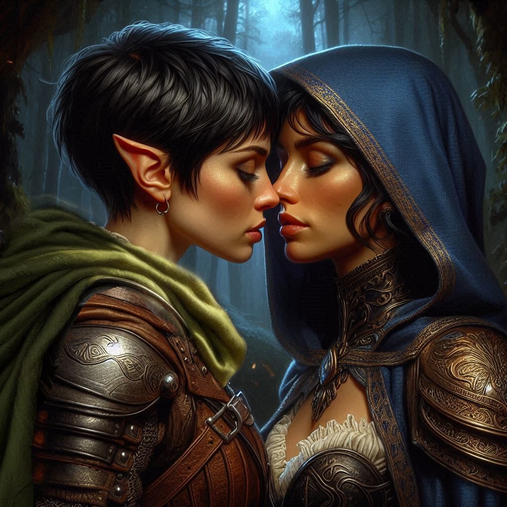

The Seduction Ruse
The forest around Hemlock Falls is eerily silent, the canopy of trees thick enough to blot out the moonlight. You sit across from Princess Hawthorn at the edge of your makeshift campfire, the flickering flames casting her face in a soft glow. Her beauty is undeniable—regal, composed, yet there’s something more beneath the surface. Something raw, something that draws you in despite your better judgment.
You watch her, waiting for the perfect moment. You know what you have to do. Hawthorn is hiding something, and your mission—to find Jorsh and stop whatever dark magic he’s involved with—depends on getting closer to her, closer than you’ve been willing to admit. You shift your gaze, letting it linger on her lips, then her eyes, which meet yours with a hint of curiosity.
“Princess,” you say softly, your voice low and inviting. You take a slow step toward her, your movements deliberate, as if drawn by a magnetic pull. She doesn’t move, but you can see the way her breath catches in her throat. “You never told me why you’re really here.”
She hesitates, her eyes flicking away for just a second before returning to yours. “I told you enough, ranger. I’m here to stop Varis. That should be enough for you.”
You shake your head, moving even closer now, until you can feel the warmth of her body mixing with the fire’s heat. You reach out, lightly brushing your fingers against her arm, feeling her shiver under your touch. “It’s not enough for me. You’re hiding something… and I want to know what it is.”
Her eyes widen slightly, and you see a spark of something—desire, intrigue, fear?—flicker across her face. “Kira, I…” She trails off as your hand moves to her chin, tilting her face up so that your lips hover just inches from hers. The air between you vibrates with tension, and for a moment, you wonder if you’re in too deep.
But you push forward. “Tell me,” you whisper, your voice barely audible above the crackling fire. “Tell me the truth.”
Hawthorn inhales sharply, her resolve crumbling under your gaze. And then, before either of you can think twice, your lips meet. The kiss is electric, filled with the passion of two warriors on the edge of their own secrets. You feel her melt into you, her hands slipping around your waist, pulling you closer.
For a moment, you lose yourself in it—the softness of her lips, the way her body presses against yours. But you can’t forget why you’re here. This is a game, one you have to win. You break the kiss gently, letting your fingers brush through her hair as you pull back, your eyes searching hers for the truth.
Hawthorn exhales, her breath shaky, and you see the vulnerability there, the crack in her defenses. “Kira… I’ve been watching you. For longer than you know.” Her voice is soft now, her usual commanding tone gone. “I know about Jorsh. About what he meant to you.”
Your heart stutters in your chest at the mention of his name, but you keep your face calm, unreadable. “And?”
She pulls away slightly, just enough to look into the fire, her expression conflicted. “I ordered the magistrate to send you after him. I thought… I thought your connection to him might make you the best chance we had of bringing him in. Or killing him, if necessary.”
Anger flares in your chest, but you tamp it down. You can’t let her know how deep her words cut. “So I’m just a pawn in your game?”
“No,” she says quickly, turning to face you again. “Not anymore. That’s why I needed to get close to you. I had to be sure of you.” Her voice softens, and you see the sincerity in her eyes. “But now… I see more in you than just a tool. I see someone who can help me stop Varis before it’s too late.”
You hesitate, her words sinking in. The warmth of her touch lingers on your skin, but so does the weight of her betrayal. You seduced her to extract information, but now you realize that she’s been playing her own game all along. Still, there’s something real between you, something undeniable.
“I was dishonest with you,” you admit, your voice barely above a whisper. “I used you to get the truth. But that doesn’t mean I don’t…” You trail off, your eyes meeting hers once again. There’s something between you that neither of you can deny. “There’s more here, between us, isn’t there?”
Hawthorn smiles, a sad, knowing smile. “Maybe there is. But we don’t have time for this now, Kira. Varis is close to opening the portal, and if he succeeds, it won’t just be the Kingdom of Yew at stake. The entire world could fall to the Realm of Shadows.”
You nod, the weight of the world settling on your shoulders. The mission is clear, but the path forward is anything but. As much as you’re drawn to Hawthorn, your past with Jorsh and your sense of duty cloud your heart.
“I need you, Kira,” Hawthorn says, stepping closer again, her hand gently touching your cheek. “Together, we can stop Varis. But you have to choose now.”